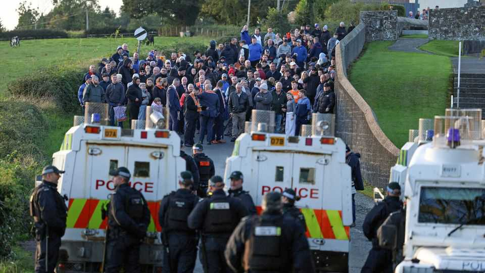

A row over a march in Northern Ireland could upend its government
The crisis suits both of the main parties

Oct 1st 2026
On a sodden road in Portadown, Northern Ireland’s first minister stood defiantly. Sinn Féin’s Michelle O’Neill knew she was acting in contravention of the law because she’d been in Belfast’s High Court the previous evening where judges rejected an attempt to prevent the Orange Order, a Protestant fraternal organisation, marching where they are unwelcome. Sinn Féin’s vote will almost certainly now rise; Northern Ireland’s devolved government at Stormont may well fall.
There are hundreds of Orange marches each year in which men in bowler hats walk behind bands and banners. Most are relaxed affairs, but a handful which pass through mostly Catholic areas are viewed by residents as triumphalist expressions of Protestant domination. The deadliest parading dispute of the 1990s was at Portadown’s Garvaghy Road. When that parade from Drumcree Parish Church was stopped, there were province-wide road closures, rioting and murders by Protestant paramilitaries.
For almost three decades, the march has been blocked. But this year the Parades Commission, which regulates marches, agreed to let 35 Orangemen march in silence early on September 27th, without any flags or supporters.
Dismayed local residents, believing there would never again be Orange feet on their road, challenged this in emergency court sittings in Belfast, but lost. The first minister and other senior nationalist politicians then went to Garvaghy Road to join hundreds of people occupying the highway. Masked individuals were present, as were dissident republicans who have not renounced violence. Despite police warnings that they were breaking the law, Ms O’Neill urged the crowd to stay.
The police judged it was too dangerous to clear the road, and a long standoff began. Drumcree is a highly symbolic dispute which touches raw nerves for unionists, who want Northern Ireland to stay part of the United Kingdom, and nationalists who want a united Ireland.
In one sense, power-sharing has already collapsed, even if the government has not. The first and deputy first ministers are meant to operate as de facto joint prime ministers. Instead, within hours of the standoff developing in Portadown they were speaking from the backbenches in Belfast’s legislature. A sense of hopelessness hangs in Stormont’s corridors.
For unionists, the sight of the first minister denouncing a judicial process and then flouting the findings of Northern Ireland’s highest court confirms their fears that Sinn Féin is not a normal constitutional party and reminds them of its history supporting murders during the 30-year conflict known as the Troubles. Nationalists cannot comprehend why unionists are backing the Orange Order wanting to march where they are unwanted.
Perversely, this crisis suits both of Stormont’s main parties. Their administration is unpopular and has been unable even to agree on a budget six months into the financial year. Both the Democratic Unionist Party and Sinn Féin are dramatically down in the polls. Fighting a snap election on familiar sectarian territory, rather than on their executive’s failures, could benefit both while squeezing other parties.
But once devolved government collapses, history shows it can take years to restore. In the meantime, public servants still get paid but public services gradually degrade in the absence of any strategic decisions. As a veteran academic, Padraig O’Malley, gloomily observed during a previous Stormont collapse three years ago, Northern Ireland is a paradox: “at once normal and abnormal, robust and fragile, forward-looking and trapped in the past, stable and unstable, vibrant and stagnant.”
In few places could 35 mostly elderly men walking in silence on a road for a few minutes bring a government to the brink of collapse. The latest spat is not really about that, however; it is about one side believing the other has won. The Good Friday Agreement in 1998 was meant to blur these binaries, and has largely been successful. But tribalism whose roots stretch back centuries doesn’t just vanish in decades.■